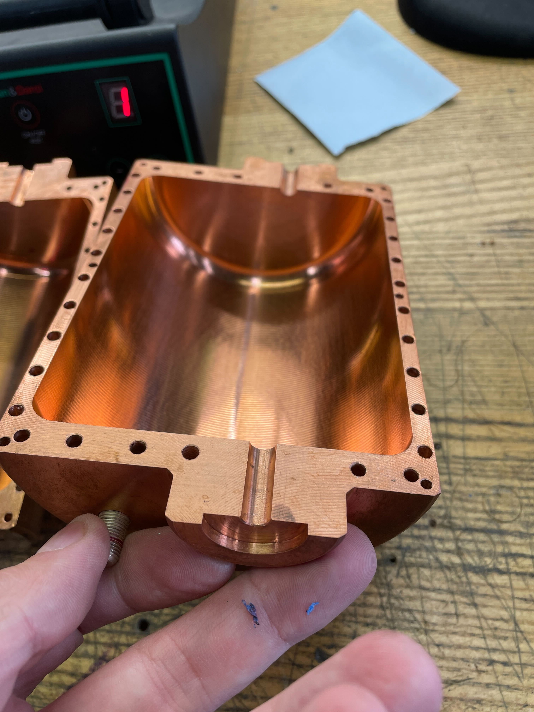
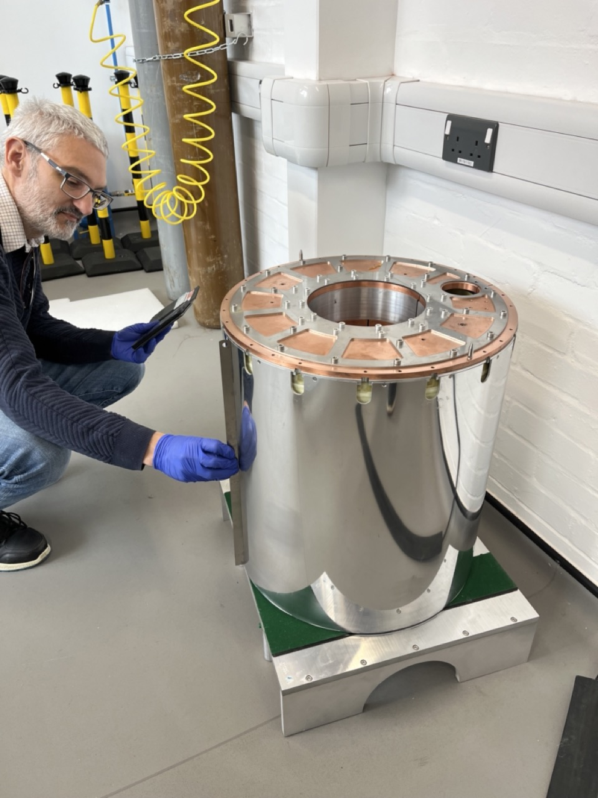

Experimental apparatus for axion searches.#
Cavities#
The resonant cavities used by axion searches are typically circular cylinders made of normal-conducting, low electrical loss materials, usually copper. High purity copper, sometimes called oxygen free copper or five nines copper (99.999% pure), has low electrical losses and the modes of cavities made of this material can have quality factors as high as 80,000 at cryogenic temperatures. Large cavities made of pure copper may not be strong enough to support themselves, so larger cavities are made from stainless steel with a thick enough copper coating on the inside to achieve high quality modes.

Tuning rods are typically made from copper as well, and are mounted with off-centre vertical axles that protrude through the top and bottom plates of the cavity through holes with bearing races inserted to lower friction. The axles are often made of a strong ceramic insulator such as industrial sapphire or alumina. This is done because a metal axle sticking through a metal hole in the cavity can support transverse electric and magnetic (TEM) electromagnetic modes. These modes do not have an electrical cutoff frequency, and there is a risk that electromagentic radiation in the cavity could leak out through these structures, causing severe degrading of modal quality factors. On the other hand, ceramic axles are not good electrical conductors, especially at low temperatures, and there has been a persistent problem cooling tuning rods mounted in this way. Experimental physics is a game of compromises and trade-offs between different aspects of the design.

Electrical signals are read out using coaxial cables where the last few \(\rm cm\) or \(\rm mm\) of the outer conductor and insulator have been removed, exposing the inner conductor, which acts as an antenna. The usual grade of coaxial cable is called RG405 - both the outer and inner conductors of standard RG405 are made from pure copper, and the dielectric insulator between the conductors is made of polytetrafluoroethene (PTFE). Other types of RG405 use superconducting materials such as niobium titanium alloy to reduce electrical losses, although some losses remain due to the dielectric. The outer conductor of the coaxial cable mates with the metal of the cavity top plate via a spring loaded insert. The springs are leaf spring contacts made of beryllium copper with enough mechanical force on the outer conductor to ensure good electrical contact, but still allow the outer conductor to slide in and out of the cavity, so that the insertion depth of the inner conductor into the cavity can be varied.
The cavity is thermally sunk to the lowest temperature plate of the refrigerator, as its physical temperature \(T_C\) sets the level of the limiting noise background for the experiment. The QSHS cavity has been cooled to 18mK, though this was a record set before we inserted the tuning rod. With the tuning rod, 40mK is the lowest we have been able to cool to. In all probability the tuning rod itself is warmer than that.
The mechanical design of the cavities depends on what they are made of. Smaller all-copper cavities tend to be milled out of solid copper bools in two halves that mate together down a vertical line parallel to the cavity axis, with a series of pins ensuring that the two haves are aligned when they are pressed together. Larger stainless steel cavities with copper plating are made as a barrel with two end plates held on to the barrel with a large number of bolts. Copper knife-edge joints ensure good electrical conductivity between the barrel and the end plates. The latter construction method makes for a stiffer and mechanically stronger cavity.
Cavities made of superconducting materials would have much higher quality factor modes. Measurements at Lancaster by my collaborator Yuri Pashkin demonstrated quality factors of 25 million in an aluminium cavity operated below \(\rm 1K\), where aluminium becomes superconducting. Disadvantages of superconducting cavities are, firstly, that most superconductors lose their superconductivity in substantial magnetic fields. This is true of aluminium and niobium, for example. There are some magnetic field tolerant alloys, in particular Niobium Titanium (NbTi) and Niobium Tin (NbSn). We have demonstrated last year that a tuning rod made of solid niobium with a thin niobium tin plating on the outer surface remains superconducting in a magnetic field of 6T. This is a promising line of research. Another potential problem with superconducting cavities is that if the modes are too high quality, it might take a very long time to scan the range of possible axion masses.
Cryostats and cooling#
QSHS uses a dilution refrigerator to achieve a cavity temperature of below \(\rm 50\,mK\). The dilution refrigerator uses evaporation of liquid \(\rm ^3He\) into \(\rm ^4He\) to refrigerate the coldest parts of the system to below \(\rm 10\,mK\). The dilution refrigerator needs to be at a temperature of order \(\rm 1K\) to start working. Therefore, the dilution refrigerator is cooled by a secondary fridge. In QSHS, this secondary cooling is provided by a two stage pulse tube cooler.
The operation of a dilution refrigerator is described in detail, and very effectively, in this publication from Oxford Instruments scientists Graham Batey and Gustav Teleberg. The basic principles are outlined here.
Helium has two stable isotopes, \(\rm ^3He\), the nuclei of which consist of a single neutron and two protons, and the naturally far more abudant \(\rm ^4He\), which has two neutrons and two protons. At temperatures below 0.85K, a mixture of these two isotopes separates into two phases. The less dense phase consists entirely of \(\rm ^3He\). The more dense phase consists mostly of \(\rm ^4He\), but with approximately 6% of \(\rm ^3He\) dissolved in it. The cooling power of a dilution refrigerator is achieved when \(\rm ^3He\) from the less dense phase evaporates across a boundary into the more dense phase.

A dilution refrigerator consists of two chambers connected to each other by a series of heat exchangers. The upper chamber is called the still, and the lower chamber is called the mixing chamber. During normal operation, the mixing chamber is filled entirely with helium liquid, with a boundary between the upper \(\rm ^3He\) layer and the lower \(\rm ^4He\) dominated layer formed horizontally part way up the mixing chamber, rather like the boundary between the oil and the vinegar in unmixed salad dressing. A pipe exits the bottom of the heat exchanger, then ascends via the heat exchangers to the upper still chamber. There the surface of the \(\rm ^4He\) dominated liquid has its interface with helium vapour above. The latent heat of evaporation of the \(\rm ^3He\) present in the \(\rm ^4He\) dominated layer is lower than that of the \(\rm ^4He\). A vacuum pump is used to pump on the surface of the \(\rm ^4He\) liquid in the still, drawing the \(\rm ^3He\) out of the mixture, so that there is now a deficit of \(\rm ^3He\) in the \(\rm ^4He\) dominated layer. Osmosis ensures that this deficit transfers to the mixing chamber below. Therefore, \(\rm ^3He\) from the upper liquid phase in the mixing chamber is induced to evaporate downwards into the \(\rm ^4He\) rich layer to make up the deficit. Since the pump that is removing the \(\rm ^3He\) at the still is running continuously, there is continuous evaporation of \(\rm ^3He\) into the \(\rm ^4He\) rich layer in the mixing chamber. This evaporation takes energy out of the helium liquid and cools the mixing chamber. This cooling mechanism can be made to work down to temperatures as low as \(\rm 1\,mK\). In QSHS, we achieve mixing chamber plate temperatures of \(\rm 8.5\,mK\) with the fridge unloaded.

The \(\rm ^3He\) pumped out of the liquid is compressed and re-introduced into the apparatus by two vacuum pumps and a compressor. The reintroduced helium is initially warmer than the \(\rm ^3He\)-\(\rm ^4He\) mixture in the pipes between the mixing chamber and the still. As the \(\rm ^3He\) descends back through the fridge towards the mixing chamber, a series of heat exchangers allow the cool exiting helium to extract energy from the warmer helium re-entering the system. The efficiency of these heat exchangers is critical to the operation of the dilution fridge. The most efficient heat exchangers in the system use sintered silver powder to provide a very large surface area to ensure that energy can be transferred between the helium and the mating metal surfaces, overcoming the Kapitza resistance effects that would otherwise limit the efficiency of this energy exchange.
Magnets#
The power of the signal from axions converting to photons in the cavity can be written
where \(B_0\) is the nominal strength of the magnetic field, \(V\) is the cavity volume, \(f_0\) is the frequency of the converted photon, \(Q\) is the quality factor of the cavity mode excited, \(g_\gamma\) is a theory dependent relative coupling strength and \(\rho_H\) is the local energy density of halo dark matter. You can see that the signal power is proportional to the square of the magnetic field, so it is important to thread the detector with as large of a magnetic field as you can afford. The cost of high field magnets is significant, and the acquistion of a suitable magnet is frequently one of the stumbling blocks between the aspiring axion searcher and a sensitive apparatus.
The cost of the magnet scales roughly as the stored energy in the field, which scales as \(B^2V\), which is also the scale that indicates the stored energy and the power that axions will produce in converted photons. However, there are other considerations, including the extent of the stray fields from the magnet and its robustness against quenching. The QSHS magnet is worth roughly £400k and has a field of about \(\rm 8T\) over a cylindrical volume \(\rm 20\,cm\) in diameter and \(\rm 20\,cm\) in height. The magnet employs a compensation coil as the outermost winding, which significantly cuts down the otherwise considerable stray fields outside the magnet bore. This is both a safety feature and a major experimental advantage, since low stray fields allow relatively open designs of other experiment components, such as the magnetic field shield that must surround sensitive quantum amplifiers and the electronics that drives motors that move the tuning rod and antenna.
Superconducting magnets are essential, since normal-conducting multi-tesla magnets require complex liquid flow cooling that would cause unacceptable vibration and heating. Older and larger magnets have the superconducting coils immersed in liquid helium reservoirs. Though this provides excellent conductive cooling and is good protection against magnet quenches, it is also very expensive and nowadays requires an auxiliary system to recover and reliquify the greater portion of the helium boiled off during normal magnet operations. The QSHS magnet is instead cooled via conduction. Copper foils are interspersed between the layers of windings, and used to thermally short the windings to the \(\rm 4\,K\) stage that is cooled by the second stage of the pulse tube cooler.
Conductive cooling is more difficult than cryogenic liquid wet cooling, but the reward is greatly reduced complexity and expense, and also less spectacular quenches. A quench is the name for a superconducting magnet, initially cold and superconducting, developing a warm spot, often at a place in the windings where there is an imperfection or a join between superconducting cable lengths. Once a hot spot develops, resistive heating causes it to spread rapidly, and in a fraction of a second the whole magnet is resistive, and the magnet current drops from maybe 160 amps to zero in less than a second. When a liquid cooled magnet quenches over a hundred litres of helium liquid may evaporate in a few seconds, an event that you will never forget if you witness it once. Dry magnets barely produce a notieable sign of a quench, unless you are monitoring the magnet control circuitry, though you may discover later that your experiment in the magnet bore is badly damaged. Eddy currents induced by rapid changes in magnetic field will induce forces between different parts of the apparatus, and it has been known for axion experiments to sustain severe mechanical damage as a consequence of quench events.

Quench protection is improved if superconductors that are more robust to magnetic fields are used. The QSHS magnet has an inner winding made of Niobium Tin. This alloy can withstand magnetic fields of up to about \(\rm 15\,T\). Higher field materials include Yttrium barium copper oxide (YBCO), which can be formed into tapes that can withstand fields even as high as 35T. However, such magnets tend to be far smaller bore, so usually smaller fields are employed over higher volumes. Again, physics is usually in reality a trade-off between high specification and practicality.
